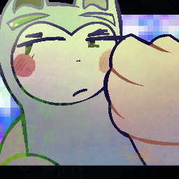

<!DOCTYPE html>
<html>
    <head>
        <meta charset="UTF-8">

        <!--CE stands for Cool's Encyclopedia-->
        <title>
            Keymaster - CE
        </title>

        <link rel="icon" type="image/png" href="./Data/kmpixel.png">

        <!-- Single theme link for swapping -->
        <link id="theme-link" rel="stylesheet" href="/css/light.css">

        <meta property="og:title" content="Keymaster - C.E.">
        <meta property="og:description" content="Cool's Encyclopedia is a passion project that serves as an OC Wiki for Cool and Cool's friends.">
        <meta property="og:type" content="website">
        <meta property="og:url" content="https://coolboy7d.github.io/keymaster">
        <meta property="og:image" content="https://coolboy7d.github.io/Data/ravenpixel.png">

        <style>
            aside {
                width: 50%;
               padding-left: 15;
               margin-left: 15;
               float: right; 
            }
        </style>
    </head>

    <body>

        <aside style="width: 95%; padding-left: 15px; margin-left: 15px; float: right;">

            
            <!--Top of page: Title-->
            <h1 style=
            "box-shadow: 5px 5px darkcyan;
            border: 4px solid darkcyan;
            border-radius: 40px;
            text-align: center;
            background-color:cyan;
            color: cornflowerblue;">
                Keymaster
            </h1>
                    <!--image-->
                    <aside style="all: inherit; width: 50%; padding-left: 15px; margin-left: 15px; float: right;">
                    <br>

                    <!--Image comment-->
                    <small>
                        Keymaster as he appears in Cool's Discord profile picture. (Drawn by Smore)
                    </small><br><br>
                    <p style=
                    "width: 490px;
                    border-radius: 15px;
                    text-align: center;
                    background-color: beige;
                    color: black;">
                    <!--Name-->
                    Keymaster<br>
                    <!--Pronouns-->
                    He/Him<br>
                    <!--Index-->
                    #01<br> <A href="./raven">Next --)</A><br>
                    <!--Defining trait-->
                    Defining Trait: Confidence<br>
                    <!--Notes-->
                    <b>
                        Notes:<br>
                    </b>
                    <small style="color:black;">
                        First OC that Cool ever made.<br>
                        Has a variety of powers.<br>
                        Is classified as a god.
                    </small>
                    </p>
                    </aside>
            <!--Top of page: Quote-->
            <h5 style=
            "width: 40%; 
            border-top: 2px solid;
            border-bottom: 2px solid;
            border-radius: 2%;">
                "I don't need to be nice to everybody in order to protect them."<br>
            <small>
                <b>
                    <small>
                        - Keymaster
                    </small>
                </b>
            </small>
            </h5>
            <!--Top of page: Homepage Hyperlink-->
            <h3>
                <a href="./">Back to home</a>
            </h3>
            <!--Top of page: Infoboxes (Page Warnings)-->

            <!--Missing Content-->
             <p style=
            "width: 40%;
            border-radius: 15px;
            font-size: large;
            background-color: crimson;color:black;
            text-align: center;">
            <b style="text-shadow: 1px 1px;"><br>This page is missing content.<br><br></b>
            <small style="color: black;">
                Missing content: History, Camps, Camp Lore, Gallery, etc.
                <br><br></small>
            </p>

            <p style="border:1px solid;box-shadow:none;font-size: x-large; text-align: center;"><br>Table of Contents:<br><br>
            <small> 
                <a href="#desc">Official Description</a><br><br>
                <a href="#lore">Lore</a><br>
                <br><br></small>
            </p>

            <!--Middle of page: Official Description-->
                    <p id="desc" style="font-size: x-large;border:none;box-shadow: none;"><b>Official Description</b></p>
                    <p style=
                    "border: 1px solid;
                    width:45%;
                    border-radius: 100%;">
                    </p>
                    Keymaster is a god that lives in The Void. His job, (or in His words, purpose) is to go around to different universes, and remove any
                    anomalies he may find there. Anomalies, you know, things that aren't supposed to <em>be there.</em> He really enjoys what he does, or
                    at least that's what he <em>says</em>. <br>
                    Keymaster has a vast assortment of <a href="./abilities">Abilities</a> at his disposal. The one he likes to use the most is his
                    <a href="./abilities">Ability</a> to conjure things. To focus the energy within him into a solid object of any material he wishes.
                    His most common use for this is creating arms with it.<br><br>
            

            <!--Middle of page: Lore-->
                    <p id="lore" style="font-size: x-large;border:none;box-shadow: none;"><b>Lore</b></p>
                    <p style=
                    "border: 1px solid;
                    width:45%;
                    border-radius: 100%;">
                    </p>
                    Keymaster is a god that was made by Him, a 'Hyper-God' of sorts. Keymaster lives in The Void, an endless void with nothing in sight for
                    lightyears. Though, that doesn't mean there's nothing there. Many of the things that are completely dead from existance end up there.
                    Though, even the waste that's already there rots eventually... And it forms beings that were <em>made</em> for the void. That you won't
                    really find anywhere else.<br>
                    Keymaster goes to universe to universe in his little corner of the multiverse (that He has convinced Keymaster that that's all of the multiverse)
                    and he protects it from every threat to the universe he can find. Like, universe shattering things. Those kinds of things that universes
                    need protecting from.<br>
                    As a result of his <em>immense, immense</em> power, this causes Keymaster to be really cocky and confident in his own abilities to handle
                    any threat he can possibly percieve. Though, there are threats out there that he can find that won't let him go that easily.<br><br>
        <!--Keep these at very bottom-->
        <br>
        <!-- Dark mode toggle button -->
        <button id="dark-toggle" type="button" style="width: fit-content; height: fit-content;" onclick="toggleDarkMode()">
            Toggle Dark Mode
        </button>

        <br><br>
        <b><small><small>
            Update convention: major.minor.patch(stage of dev)<br>
            Site Version: <div id="text-container">Loading...</div>
        </small></small></b>

        <!-- Dark mode JS -->
        <script src="./darkmode.js"></script>
        <!-- Version number JS -->
        <script src="./script.js"></script>
        </aside>
    </body>
</html>